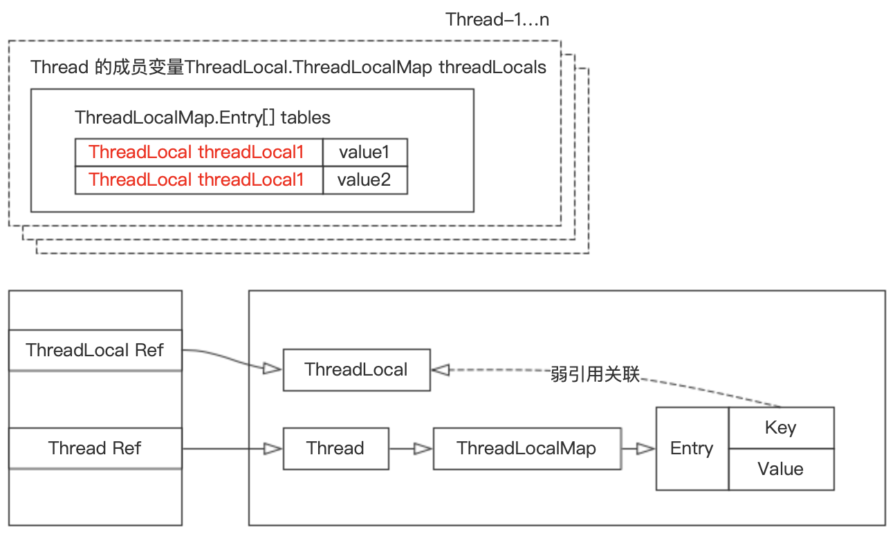

1 初识 ThreadLocal
实现好的并发是一件困难的事情，所以很多时候我们都想躲避并发。避免并发最简单的方法就是线程封闭。什么是线程封闭呢？ 就是把对象封装到一个线程里，只有这一个线程能看到此对象。那么这个对象就算不是线程安全的也不会出现任何安全问题。Java 语言及其核心库提供了一些机制来帮助维持线程封闭性，例如局部变量和 ThreadLocal 类。摘自《Java 并发编程实战》3.3 节线程封闭，见 P42。
ThreadLocal 提供了 get 与 set 等方法，这些方法为每个使用该变量的线程都存有一份独立的副本。因此 get 总是返回由当前执行线程在调用 set 时设置的最新值。ThreadLocal 对象通常用于防止对可变的单实例变量（Singleton）或全局变量进行共享。例如，在单线程应用程序中可能会维持一个全局的数据库连接，并在程序启动时初始化这个连接对象，从而避免在调用每个方法时都要传递一个 Connection 对象。由于 JDBC 的连接对象不一定是线程安全的，因此，当多线程应用程序在没有协同的情况下使用全局变量时，就不是线程安全的。通过将 JDBC 的连接保存到 ThreadLocal 对象中，每个对象都会拥有属于自己的连接，如所示。
1 | private static ThreadLocal<Connection> connectionHolder = ThreadLocal.withInitial(() -> DriverManager.getConnection(DB_URL)); |
当某个线程初次调用 ThreadLocal#get 方法时，就会获取 withInitial 初始化后的初始值。从概念上看，你可以将 ThreadLocal 视为包含了 Map<Thread,T> 对象，其中保存了特定于该线程的值，但 ThreadLocal 的实现并非如此。这些特定于线程的值保存在 Thread 对象中，当线程终止后，这些值会作为垃圾回收。
ThreadLocal 为解决多线程程序的并发问题提供了一种新的思路，即躲避并发问题。因此 ThreadLocal 无法解决共享变量的更新问题。由于不需要共享信息，自然就不存在竞争问题了，从而保证了某些情况下线程的安全，以及避免了某些情况需要考虑线程安全必须同步带来的性能损失！！！
ThreaLocal 使用示例代码：
1 | public class ThreadLocalTest { |
执行过程中部分打印内容：
1 | Thread-1:11:22 |
从运行的结果我们可以看到 Thread-1 进行 set 值对 Thread-2 并没有任何影响！
结合以上示例，通过以下两个关系深深体会下它们之间的关系。
2 ThreadLocal 源码分析
要理解 ThreadLocal 的实现原理，必须理解以下三个类：
- Thread
- ThreadLocal — Thread 中维护的 ThreadLocalMap 类型的实例变量
- ThreadLocalMap — ThreadLocal 的静态内部类
三者的关系图见下：
在 Thread 类下维护这一个类型为 ThreadLocalMap 类型的成员变量 threadLocals，ThreadLocalMap 为 ThreadLocal 下定义的静态内部类，是一个 Map 结构，key 是 ThreadLocal 类型，value 为 Object 类型。
ThreadLocalMap 的实现：
1 | static class Entry extends WeakReference<ThreadLocal><?>> { |
可以看到 ThreadLocalMap 的 Entry 继承了 WeakReference。那么为什么要继承 WeakReference 类型？见后续内容。
那么，ThreadLocal 是如何工作的呢？先了解一下 ThreadLocal 类提供的几个方法：
1 | public T get() { } |
2.1 get 方法
1 | public T get() { |
2.2 setInitialValue 方法
1 | private T setInitialValue() { |
setInitialValue 方法为模板方法，其中 initialValue 需要初始化时进行重写，initialValue 默认返回 null。
1 | protected T initialValue() { |
当前线程 ThreadLocalMap 为空创建 ThreadLocalMap。
1 | void createMap(Thread t, T firstValue) { |
2.3 set 方法
set 方法设置的 key 固定为当前线程的引用。
1 | public void set(T value) { |
当前线程 threadLocals 属性为 null 时，需要新建：
1 | void createMap(Thread t, T firstValue) { |
当前线程 threadLocals 属性不为 null 时，需要更新：
1 | /** |
在 map.set(this, value) 方法中除了存储元素之外，还有一个很重要的作用，就是 replaceStaleEntry 和 cleanSomeSlots 方法，这两个方法可以清除掉 key=null 的实例，防止内存泄漏（后续会详细讲述）。
在该方法中还有一个变量很重要：threadLocalHashCode，该变量为 ThreadLocal 的成员变量，定义为：private final int threadLocalHashCode = nextHashCode(); 从名字上面我们可以看出 threadLocalHashCode 应该是 ThreadLocal 实例变量的散列值，定义为 final，表示 ThreadLocal 实例变量一旦创建其散列值就已经确定了，生成过程则是调用 nextHashCode 方法：
1 | private static AtomicInteger nextHashCode = new AtomicInteger(); |
nextHashCode 表示分配下一个 ThreadLocal 实例的 threadLocalHashCode 的值，HASH_INCREMENT 则表示分配两个 ThradLocal 实例的 threadLocalHashCode 的增量。
2.4 remove 方法
1 | public void remove() { |
3 内存泄漏问题
实际上 ThreadLocalMap 中使用的 key 为 ThreadLocal 的弱引用，弱引用的特点是，如果这个对象只存在弱引用，那么在下一次垃圾回收的时候必然会被清理掉。ThreadLocal 为什么要使用弱引用？原因很简单：有助于垃圾收集器回收。
结合之前的示例中的关系图：
当仅仅只有 ThreadLocalMap 中的 Entry 的 key 指向 ThreadLocal 变量的时候，此时 key 没有被外部强引用，ThreadLocal 就会进行回收。
ThreadLocal 被垃圾回收后，在 ThreadLocalMap 里对应的 Entry 的 key 值会变成 null，但是 Entry 是强引用，那么 Entry 里面存储的 Object，并没有办法进行回收，所以 ThreadLocalMap 做了一些额外的回收工作。
ThreadLocal 在 get、set、remove 方法方法中执行的过程中都会对 key 为 null 的键值对进行清理，具体的执行清理方法是 expungeStaleEntry，源码见下：
1 | private int expungeStaleEntry(int staleSlot) { |
但是如果一个线程运行周期较长，而且将一个大对象放入 ThreadLocalMap 后便不再调用 set、get、remove 方法，可能会导致内存泄漏。这个问题确实存在，只能依靠程序员在完成 ThreadLocal 的使用后要养成手动调用 remove 的习惯，从而避免内存泄漏。
建议：ThreadLocal 变量使用 static 修饰的一个好处是由于 ThreadLocal 有强引用在，那么在 ThreadLocalMap 里对应的 Entry 的键会永远存在，那么执行 remove 的时候就可以正确进行定位到并且删除。
最佳实践做法：
1 | private static ThreadLocal<?> threadLocal = new ThreadLocal<>(); |
4 扩展 ThreadLocalRandom
ThreadLocalRandom 类是 JDK7 在 JUC 包下新增的随机数生成器，它解决了 Random 类在并发场景下多个线程竞争内部唯一的原子性种子变量而导致大量线程自旋重试的不足的问题。
Random 类的底层实现：
1 | protected int next(int bits) { |
并发场景下可能多个线程同时执行到 ① 处时，可能多个线程都拿到的当前种子的值是同一个，然后执行步骤 ② 时计算的新种子也都是一样的，但是步骤 ③ 的 CAS 操作会保证只有一个线程可以更新旧的种子为新的，失败的线程会通过循环重新获取更新后的种子作为当前种子去计算新的种子。因此会造成大量线程进行自旋重试，这会降低并发性能，所以 ThreadLocalRandom 应运而生。
ThreadLocalRandom 示例：
1 | public class ThreadLocalRandomTest { |
ThreadLocalRandom 使用 ThreadLocal 的原理，让每个线程内持有一个本地的种子变量，该种子变量只有在使用随机数时候才会被初始化，多线程下计算新种子时候是根据自己线程内维护的种子变量进行更新，从而避免了竞争。
5 扩展 InheritableThreadLocal
6 扩展 Netty 的 FastThreadLocal
7 参考资料
Java 并发编程：深入剖析 ThreadLocal
ThreadLocal 原理和使用场景分析
ThreadLocal 终极源码剖析一篇足矣！
ThreadLocal 源码解读
手撕面试题 ThreadLocal
Java 并发 29：ThreadLocalRandom 学习笔记-随机数的三种使用方法
并发包中 ThreadLocalRandom 原理剖析